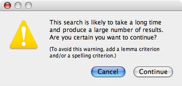

|
|
|
In earlier chapters we described how to do simple searches by clicking buttons in the word information and lemma information windows.
To do more complicated searches, or to do searches at any time even when a word or lemma information window is not present, use the "Find Words" command in the "Find" menu (Command-F):
In this example, we are searching the Shakespeare corpus for all occurrences of the noun "tyranny."
Each row specifies a single search criterion. When you click the "Find" button, WordHoard queries the database to find the word occurrences which match all of the criteria you have specified. The results are presented in a concordance window, which is described in detail in the next chapter.
To add a criterion, click one of the plus buttons on the left. This inserts a new criterion row immediately following the row containing the plus button you clicked.
To remove a criterion, click the minus button in the row you wish to remove.
Use the popup menu in the middle to change the type of the criterion:
In this example, we are changing the type of the criterion from "Corpus" to "Major word class." After releasing the mouse button, the dialog appears as follows:
Notice that the control on the right has changed from a corpus selection popup menu to a major word class popup menu. Each criterion type has its own control or field on the right that you use to specify the value of the criterion. In some cases, multiple controls and/or fields appear on the right. For example, for the "Publication year" criterion, there are two fields you use to enter a range of years:
Some criteria have even more controls for various options:
Example 1. Find all occurrences of the verb "love" in Shakespeare which are spoken by female characters in verse in comedies published between 1600 and 1605. This example uses six search criteria:

This search finds 46 words, 17 in Twelfth Night (1601-1602), 18 in All's Well That Ends Well (1602-1603), 8 in Troilus and Cressida (1601-1602) and 3 in Measure for Measure (1604).
In this example, the first "Corpus" criterion is superfluous but harmless, because the "Work set" criterion already narrows the search to a subset of the Shakespeare corpus.
Example 2. Find all 448 occurrences of Latin words in Shakespeare and group them by lemma to see that five of these occurrences are the Latin word "imprimis," and then look them up in the text of the three plays in which the word appears. We only need two criteria for the search part of this problem:
In this example, when you click the "Find" button, the following alert appears:

This alert is advisory. It appears when, in WordHoard's best judgement, you may be asking for something you didn't really intend. In this case, we know what we are doing, because we don't expect there to be all that many Latin words in Shakespeare, so we click "Continue".
The rest of this problem, grouping the results by lemma, is done using grouping options in the concordance window, which is the subject of the next chapter. We will continue this example at the end of that chapter.
Example 3. Find all occurrences of the noun "question" spoken by the character "Hamlet." We use four criteria for this search. We use a "Corpus" criterion to narrow the search to just the Shakespeare corpus, and we use a "Work" criterion to further narrow the search to just the play Hamlet. We could have left out these two criteria, and searched all the works in all the corpora, but adding the two extra criteria makes the search go faster.
Notice that in this example we only typed the first four characters "ques" of the lemma name. When we click the "Find" button, the following dialog appears asking us to select among the lemmas which start with "ques":
To complete our search, we click our desired lemma "question (n)" to select it (or we press the down arrow key twice to move the selection down to our desired lemma), then click the "OK" button (or press Return).
This feature is called "lemma completion." You can also click the "Complete" button in the lemma criterion row to complete a partial lemma, but this is not necessary.
The lemma completion feature is case and diacritical insensitive. This is particularly useful when typing Greek lemmas, because you don't have to worry about typing accent or breathing marks.
Example 4. Find all occurrences of words in Book 3 of Homer's Iliad which have a specified metrical shape and are spoken by an immortal or supernatural character. We use five criteria:
Note that when you want to specify a work criterion, you must first specify a corpus criterion. When you want to specify a work part criterion, you must first specify both a corpus and a work criterion. In this example, we first specified the corpus (Early Greek Epic), then the work (The Iliad), then the part (Book 3). We then added the metrical shape and speaker mortality criteria to complete the definition of our query.
Example 5. Count up the different ways Chaucer spells the adjective "young" in The Canterbury Tales. This query uses three criteria:
The rest of this problem, counting up the spellings, is done by using grouping options in the concordance window, which is the subject of the next chapter. We will continue this example at the end of that chapter.
Example 6. Find all occurrences of words in Shakespeare that start with the letters "pardon".
In this example, we use the match-any wild card character "*" in the search string "pardon*". The "*" matches any sequence of zero or more characters. The search locates 333 words with 12 different spellings: "pardon" (both the noun and the verb), "pardoned", "pardons", etc.
|
|
|